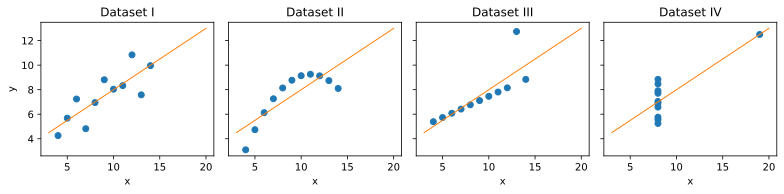
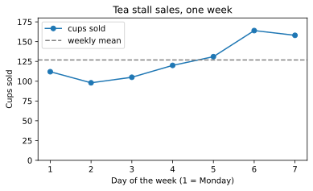
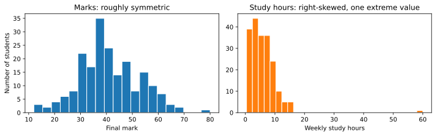
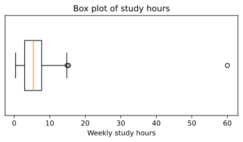
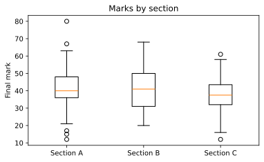
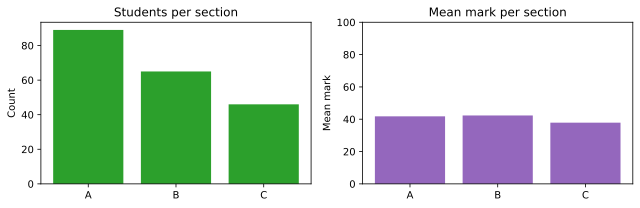
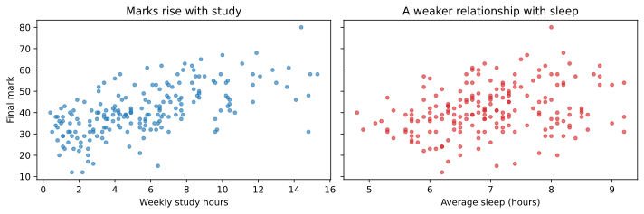
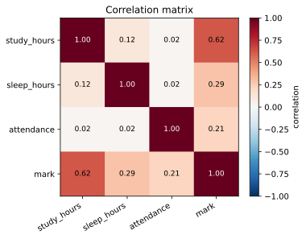
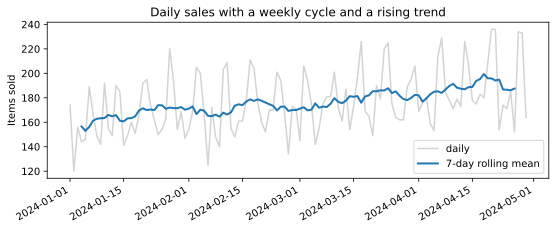

Chapter 6: Visualisation and Exploratory Data Analysis¶
Looking at data with matplotlib before drawing conclusions from it
Learning outcomes
After this chapter you should be able to:
- explain why summary statistics alone can mislead, using Anscombe's quartet;
- build a matplotlib figure with the object-oriented interface (
fig, ax = plt.subplots()), label it and save it as SVG; - choose a suitable chart for a question: histogram, box plot, bar chart, scatter plot or line plot;
- describe a distribution by its centre, spread, shape and unusual values;
- compare groups and explore the relationship between two variables, including correlation;
- apply the rules that make a chart honest and readable;
- carry out a structured exploratory analysis of a new dataset and write down its findings.
Exploratory data analysis (EDA) is the stage of the workflow where you get to know a dataset: what each variable looks like, how variables relate to each other, what is missing or strange, and which questions the data can and cannot answer. Its main tool is the chart. A good chart shows in a second what a table of numbers hides, and it is also the best way to communicate a result at the end. This chapter teaches matplotlib, the standard plotting library for Python, and uses it to explore data systematically.
import numpy as np
import pandas as pd
import matplotlib.pyplot as plt
6.1 Why look at the data?¶
In 1973 the statistician Francis Anscombe published four small datasets, now known as Anscombe's quartet, to make a point. Each has eleven pairs of numbers \((x, y)\). Here they are, with their summary statistics:
x = [10, 8, 13, 9, 11, 14, 6, 4, 12, 7, 5]
anscombe = {
"I": (x, [8.04, 6.95, 7.58, 8.81, 8.33, 9.96, 7.24, 4.26, 10.84, 4.82, 5.68]),
"II": (x, [9.14, 8.14, 8.74, 8.77, 9.26, 8.10, 6.13, 3.10, 9.13, 7.26, 4.74]),
"III": (x, [7.46, 6.77, 12.74, 7.11, 7.81, 8.84, 6.08, 5.39, 8.15, 6.42, 5.73]),
"IV": ([8, 8, 8, 8, 8, 8, 8, 19, 8, 8, 8],
[6.58, 5.76, 7.71, 8.84, 8.47, 7.04, 5.25, 12.50, 5.56, 7.91, 6.89]),
}
for name, (xs, ys) in anscombe.items():
xs, ys = np.array(xs), np.array(ys)
r = np.corrcoef(xs, ys)[0, 1]
print(f"{name:>3}: mean x {xs.mean():.2f}, mean y {ys.mean():.2f}, "
f"sd y {ys.std(ddof=1):.2f}, correlation {r:.3f}")
I: mean x 9.00, mean y 7.50, sd y 2.03, correlation 0.816
II: mean x 9.00, mean y 7.50, sd y 2.03, correlation 0.816
III: mean x 9.00, mean y 7.50, sd y 2.03, correlation 0.816
IV: mean x 9.00, mean y 7.50, sd y 2.03, correlation 0.817
The four datasets have, to two decimal places, the same means, the same standard deviation of \(y\) and the same correlation. A summary table would call them identical. Now look at them:
fig, axes = plt.subplots(1, 4, figsize=(11, 2.8), sharex=True, sharey=True)
for ax, (name, (xs, ys)) in zip(axes, anscombe.items()):
ax.scatter(xs, ys, color="tab:blue")
ax.plot([3, 20], [3 + 0.5 * 3, 3 + 0.5 * 20], color="tab:orange", linewidth=1)
ax.set_title(f"Dataset {name}")
ax.set_xlabel("x")
axes[0].set_ylabel("y")
fig.tight_layout()
fig.savefig("anscombe.svg")

Dataset I is a scattered straight-line relationship, the kind the summaries suggest. Dataset II is a curve. Dataset III is a perfect line spoiled by one outlier. In dataset IV there is no relationship at all except that created by a single point. The straight line \(y = 3 + 0.5x\) drawn on each is the best-fitting line for all four (Chapter 8), and it describes only the first one well.
Key idea
Summary statistics compress data, and compression throws information away. Always plot the data before trusting a summary, a correlation or a model fitted to it.
6.2 How matplotlib works¶
A matplotlib picture is a Figure (the whole image) containing one or more Axes (individual plots, each with its own x and y axis). The recommended way to work is to create both with plt.subplots and then call methods on the Axes object, conventionally named ax. This is the object-oriented interface; it scales cleanly from one plot to a grid of many.
days = np.arange(1, 8)
cups = [112, 98, 105, 120, 131, 164, 158]
fig, ax = plt.subplots(figsize=(6, 3.2))
ax.plot(days, cups, marker="o", label="cups sold")
ax.axhline(np.mean(cups), color="gray", linestyle="--", label="weekly mean")
ax.set_xlabel("Day of the week (1 = Monday)")
ax.set_ylabel("Cups sold")
ax.set_title("Tea stall sales, one week")
ax.set_ylim(0, 180)
ax.legend()
fig.savefig("first-plot.svg")
print(type(fig).__name__, type(ax).__name__)
Figure Axes

The pieces of this example appear in nearly every plot: a plotting method (plot, scatter, bar, hist, boxplot), axis labels with units, a title, axis limits where they matter, a legend when there is more than one series, and savefig to write the image. The file format follows the extension: .svg for a sharp vector image (used for every figure in this book), .png for a raster image (add dpi=200 for good resolution), .pdf for print. In a notebook the figure is also shown automatically; in a script, plt.show() opens a window.
You will also see code that calls functions directly on plt (plt.plot(...), plt.xlabel(...)). That is the older pyplot interface, which draws on "the current Axes". It is convenient for a single quick plot but confusing with several, so this book uses fig, ax = plt.subplots() throughout. pandas offers a third route, df.plot(...), which calls matplotlib for you and returns an Axes you can keep adjusting.
Choosing a chart¶
The chart follows from the question, and from the kinds of variable involved (Section 1.4).
| Question | Variables | Chart | matplotlib |
|---|---|---|---|
| How is one numerical variable distributed? | one numerical | histogram; box plot | ax.hist, ax.boxplot |
| How does a numerical variable differ between groups? | numerical + categorical | side-by-side box plots; bar chart of means | ax.boxplot, ax.bar |
| How often does each category occur? | one categorical | bar chart (sorted) | ax.bar, ax.barh |
| How are two numerical variables related? | two numerical | scatter plot | ax.scatter |
| How does a quantity change over time? | time + numerical | line plot | ax.plot |
| How are many variables related to each other? | several numerical | correlation matrix as a heat map; grid of scatter plots | ax.imshow, pd.plotting.scatter_matrix |
Table 6.1. Matching the chart to the question.
6.3 A dataset to explore¶
The rest of the chapter explores one dataset, generated with a seeded random generator so that it is the same for every reader. It describes 200 students: their class section, weekly hours of self-study, average hours of sleep, attendance (as a percentage), and final mark out of 100. The way it is generated builds in some relationships for the exploration to discover; in real work you would not know them in advance.
rng = np.random.default_rng(11)
n = 200
section = rng.choice(["A", "B", "C"], size=n, p=[0.4, 0.35, 0.25])
study = rng.gamma(shape=2.0, scale=3.0, size=n).round(1) # right-skewed hours
sleep = rng.normal(7.0, 0.9, size=n).round(1)
attendance = np.clip(rng.normal(82, 10, size=n), 30, 100).round(0)
mark = (30 + 2.0 * study + 3.0 * (sleep - 7) + 0.3 * (attendance - 80)
+ np.where(section == "C", -4, 0) + rng.normal(0, 8, size=n))
mark = np.clip(mark, 0, 100).round(0)
students = pd.DataFrame({"section": section, "study_hours": study, "sleep_hours": sleep,
"attendance": attendance, "mark": mark})
students.loc[rng.choice(n, size=6, replace=False), "sleep_hours"] = np.nan # some missing
students.loc[17, "study_hours"] = 60.0 # a suspicious value
print(students.head())
print(students.shape)
section study_hours sleep_hours attendance mark
0 A 1.1 7.3 81.0 38.0
1 B 1.1 5.7 89.0 36.0
2 B 7.4 8.5 61.0 42.0
3 A 6.3 8.8 85.0 53.0
4 A 7.0 6.1 69.0 38.0
(200, 5)
The first steps are those of Chapter 4: types, missing values, summaries.
print(students.dtypes)
print(students.isna().sum())
print(students.describe().round(1))
section str
study_hours float64
sleep_hours float64
attendance float64
mark float64
dtype: object
section 0
study_hours 0
sleep_hours 6
attendance 0
mark 0
dtype: int64
study_hours sleep_hours attendance mark
count 200.0 194.0 200.0 200.0
mean 6.0 7.0 82.0 41.1
std 5.2 1.0 9.8 11.5
min 0.4 4.8 54.0 12.0
25% 3.0 6.3 75.8 33.0
50% 5.4 6.9 83.0 40.0
75% 7.7 7.8 88.0 48.0
max 60.0 9.2 100.0 80.0
Already the summary raises questions. The maximum of study_hours (60) is far beyond the 75th percentile (about 8): is it real, or a typing error for 6.0? sleep_hours has 6 missing values. The marks range widely. Charts will tell us more.
6.4 One numerical variable: the distribution¶
The distribution of a variable is the pattern of how often each value occurs. Four features describe it:
- centre: where the typical values are (mean, median);
- spread: how far values vary (standard deviation, interquartile range, range);
- shape: symmetric or skewed (with a long tail to one side), one peak or several;
- unusual values: outliers, gaps, impossible values, suspicious spikes.
Histograms¶
A histogram divides the range into intervals (bins) and draws a bar for the number of values in each.
fig, axes = plt.subplots(1, 2, figsize=(10, 3.2))
axes[0].hist(students["mark"], bins=20, color="tab:blue", edgecolor="white")
axes[0].set_xlabel("Final mark")
axes[0].set_ylabel("Number of students")
axes[0].set_title("Marks: roughly symmetric")
axes[1].hist(students["study_hours"], bins=30, color="tab:orange", edgecolor="white")
axes[1].set_xlabel("Weekly study hours")
axes[1].set_title("Study hours: right-skewed, one extreme value")
fig.tight_layout()
fig.savefig("histograms.svg")

The marks form one roughly symmetric hump. Study hours are right-skewed: most students study a few hours, a few study a lot, and the tail stretches to the right. For a right-skewed variable the mean is pulled towards the tail and lies above the median. The single value at 60 stands out as isolated from everything else.
Caution: the number of bins changes the picture
Too few bins hide the shape; too many turn it into noise. Try a few values (say 10, 20 and 40) before deciding what the shape is. matplotlib's default is 10 bins, which is often too few.
Box plots¶
A box plot summarises a distribution in five numbers. The box runs from the first quartile \(Q_1\) to the third \(Q_3\), so it contains the middle half of the data; a line inside marks the median. The whiskers extend to the most extreme values within \(1.5 \times \text{IQR}\) of the box, and points beyond them are drawn individually as possible outliers (the rule of Section 5.6).
fig, ax = plt.subplots(figsize=(6, 2.6))
ax.boxplot(students["study_hours"], orientation="horizontal", widths=0.5)
ax.set_xlabel("Weekly study hours")
ax.set_yticks([])
ax.set_title("Box plot of study hours")
fig.savefig("boxplot-study.svg")
q1, med, q3 = students["study_hours"].quantile([0.25, 0.5, 0.75])
print(f"Q1 {q1:.1f}, median {med:.1f}, Q3 {q3:.1f}, upper fence {q3 + 1.5 * (q3 - q1):.1f}")
print("mean", round(students["study_hours"].mean(), 2))
Q1 3.0, median 5.4, Q3 7.7, upper fence 14.9
mean 5.96

The box plot shows the skew (the right whisker is longer than the left) and flags two points beyond the upper fence of 14.9 hours. One, at 15.3 hours, is only just beyond it and is perfectly plausible for a skewed variable; the other, at 60 hours a week of self-study on top of classes, is not. We will treat it as an error and set it to missing, and record that decision.
students.loc[students["study_hours"] > 40, "study_hours"] = np.nan
print(students["study_hours"].describe().round(2))
count 199.00
mean 5.69
std 3.51
min 0.40
25% 2.90
50% 5.40
75% 7.70
max 15.30
Name: study_hours, dtype: float64
6.5 Comparing groups¶
Do the three sections differ in marks? Side-by-side box plots compare whole distributions, not just averages.
groups = ["A", "B", "C"]
data = [students.loc[students["section"] == g, "mark"] for g in groups]
fig, ax = plt.subplots(figsize=(6, 3.4))
ax.boxplot(data, tick_labels=[f"Section {g}" for g in groups])
ax.set_ylabel("Final mark")
ax.set_title("Marks by section")
fig.savefig("boxplot-sections.svg")
print(students.groupby("section")["mark"].agg(["count", "mean", "median", "std"]).round(1))
count mean median std
section
A 89 41.8 40.0 11.3
B 65 42.3 41.0 11.6
C 46 37.9 37.5 11.6

Section C's median is a few marks lower than those of A and B, but the boxes overlap heavily: plenty of students in C do better than plenty in A. Whether a difference of this size could be due to chance is a question for Chapter 7. The group summary table includes count, because a mean from 50 students deserves more trust than one from 5.
A bar chart is the right chart for counts of categories, and it can show group means as well. Bars encode values by their length, so the value axis must start at zero.
counts = students["section"].value_counts().sort_index()
means = students.groupby("section")["mark"].mean()
fig, axes = plt.subplots(1, 2, figsize=(9, 3))
axes[0].bar(counts.index, counts.values, color="tab:green")
axes[0].set_title("Students per section")
axes[0].set_ylabel("Count")
axes[1].bar(means.index, means.values, color="tab:purple")
axes[1].set_title("Mean mark per section")
axes[1].set_ylabel("Mean mark")
axes[1].set_ylim(0, 100)
fig.tight_layout()
fig.savefig("bars.svg")

On an axis starting at zero, the difference in mean marks looks as modest as it is. Starting the axis at 40 would make section C's bar look half as tall as the others: a visual lie.
6.6 Relationships between two numerical variables¶
Scatter plots¶
A scatter plot draws one point per observation, with one variable on each axis. It shows the direction of a relationship (up or down), its form (straight or curved), its strength (how tightly the points follow the pattern), and points that do not fit.
fig, axes = plt.subplots(1, 2, figsize=(10, 3.4), sharey=True)
axes[0].scatter(students["study_hours"], students["mark"], s=14, alpha=0.6)
axes[0].set_xlabel("Weekly study hours")
axes[0].set_ylabel("Final mark")
axes[0].set_title("Marks rise with study")
axes[1].scatter(students["sleep_hours"], students["mark"], s=14, alpha=0.6, color="tab:red")
axes[1].set_xlabel("Average sleep (hours)")
axes[1].set_title("A weaker relationship with sleep")
fig.tight_layout()
fig.savefig("scatter.svg")

Marks clearly rise with study hours, roughly in a straight line, with a lot of scatter around it. With sleep the upward drift is much weaker. Setting alpha below 1 makes the points partly transparent, so that places where many points overlap show up darker.
Correlation¶
The correlation coefficient \(r\) (Pearson's correlation) measures the strength of a straight-line relationship on a scale from \(-1\) to \(+1\). For \(n\) pairs \((x_i, y_i)\) with means \(\bar{x}\), \(\bar{y}\) and standard deviations \(s_x\), \(s_y\),
Each term multiplies the standardised values of a pair. When large \(x\) go with large \(y\) (and small with small), most products are positive and \(r\) is positive; when large \(x\) go with small \(y\), \(r\) is negative. \(r = \pm 1\) means the points lie exactly on a line; \(r = 0\) means no straight-line relationship.
num = students[["study_hours", "sleep_hours", "attendance", "mark"]]
corr = num.corr()
print(corr.round(2))
study_hours sleep_hours attendance mark
study_hours 1.00 0.12 0.02 0.62
sleep_hours 0.12 1.00 0.02 0.29
attendance 0.02 0.02 1.00 0.21
mark 0.62 0.29 0.21 1.00
pandas computes all pairwise correlations at once, using for each pair the rows where both values are present. A heat map of the matrix makes it easy to scan:
fig, ax = plt.subplots(figsize=(5, 4))
im = ax.imshow(corr, cmap="RdBu_r", vmin=-1, vmax=1)
ax.set_xticks(range(len(corr)), corr.columns, rotation=30, ha="right")
ax.set_yticks(range(len(corr)), corr.columns)
for i in range(len(corr)):
for j in range(len(corr)):
value = corr.iloc[i, j]
ax.text(j, i, f"{value:.2f}", ha="center", va="center", fontsize=9,
color="white" if abs(value) > 0.7 else "black")
fig.colorbar(im, ax=ax, label="correlation")
ax.set_title("Correlation matrix")
fig.savefig("correlation.svg")

Mark is most strongly correlated with study hours (\(r = 0.62\)), and much more weakly with sleep (0.29) and attendance (0.21). The correlations among the three predictors are close to zero (the largest is 0.12), which matches how the data was generated: they were drawn independently.
Caution: what correlation does not tell you
Three warnings belong with every correlation. It measures only straight-line relationships: a perfect U-shaped relationship can have \(r = 0\). It is sensitive to outliers: one extreme point can create or destroy a correlation, as dataset IV of Anscombe's quartet shows (that is one reason we removed the 60-hour value). Correlation is not causation: students who study more may also differ in motivation, background or other ways that affect marks. Only a controlled experiment, or careful reasoning about other causes, supports a causal claim.
6.7 Change over time¶
A line plot joins points in time order, so that trends, seasonal patterns and sudden changes stand out. Here are 120 days of simulated sales from a small shop, with a weekly pattern, a slow upward trend, and noise:
rng_t = np.random.default_rng(3)
dates = pd.date_range("2024-01-01", periods=120, freq="D")
weekly = np.where(dates.dayofweek >= 5, 40, 0) # weekends are busier
trend = np.linspace(0, 30, len(dates))
daily = pd.Series(150 + trend + weekly + rng_t.normal(0, 12, len(dates)), index=dates).round()
fig, ax = plt.subplots(figsize=(9, 3.2))
ax.plot(daily.index, daily.values, color="lightgray", label="daily")
ax.plot(daily.index, daily.rolling(7, center=True).mean(), color="tab:blue", linewidth=2,
label="7-day rolling mean")
ax.set_ylabel("Items sold")
ax.set_title("Daily sales with a weekly cycle and a rising trend")
ax.legend()
fig.autofmt_xdate()
fig.savefig("timeseries.svg")
print(daily.head(8))
2024-01-01 174.0
2024-01-02 120.0
2024-01-03 156.0
2024-01-04 144.0
2024-01-05 146.0
2024-01-06 189.0
2024-01-07 167.0
2024-01-08 149.0
Freq: D, dtype: float64

The raw series zigzags with the weekly cycle; the rolling mean (the average of each 7-day window) smooths the cycle away and reveals the trend. Chapter 12 returns to time series.
6.8 Making charts honest and clear¶
A chart is an argument, and it can mislead as easily as words. These rules prevent most problems.
- Label everything. Axis labels with units, a title that says what the chart shows, a legend when there are several series.
- Start bar charts at zero. Bars encode values by length. Line and scatter plots need not start at zero, because they encode values by position.
- Use the same scale when comparing. Side-by-side panels should share axes (
sharex,sharey) unless there is a reason not to, and the reader should be told if they do not. - Prefer position and length to area, angle and colour. People judge positions along a common scale most accurately. Pie charts (angles) and bubble sizes (areas) are harder to read; 3D effects distort everything.
- Sort categorical bars by value, unless the categories have a natural order (months, ratings).
- Choose colours with care. Use colour to encode a variable only when needed, avoid red–green contrasts that colour-blind readers cannot distinguish, and use a diverging colour map (like the one in Figure 6.8) only for data with a meaningful centre.
- Show the data, not just a summary, when there is not too much of it: the points, a box plot or a histogram, rather than a single bar for a mean.
- Say how many. Report the number of observations behind every summary.
6.9 An exploratory analysis, step by step¶
EDA is not a fixed procedure, but a checklist keeps it thorough. Here it is, with what we found for the student data.
| Step | What to do | Students dataset |
|---|---|---|
| 1. Structure | rows, columns, types; what is one row? | 200 students × 5 variables; one row per student |
| 2. Missing values | count by column; is missingness related to anything? | 6 sleep values missing; 1 study value set to missing |
| 3. One variable at a time | histograms, box plots, counts | marks symmetric; study hours right-skewed; one impossible value |
| 4. Two variables at a time | scatter plots, correlations, grouped box plots | mark rises with study (strongest), more weakly with sleep and attendance; section C a little lower |
| 5. Questions and caveats | what can and cannot be concluded | association, not causation; group differences need a test |
Table 6.2. An EDA checklist applied to the students dataset.
A short written summary is the real output of EDA. For this dataset:
Example 6.1: Findings of the exploration
- The data has 200 students and five variables. Six sleep values are missing; one study value of 60 hours a week was judged impossible and set to missing.
- Marks are roughly symmetric around 40, with a wide spread. Study hours are right-skewed: a median of about 5 hours, with a tail up to about 15.
- Marks rise with study hours (the strongest correlation, 0.62), and more weakly with sleep and attendance (about 0.2 to 0.3).
- Section C's median mark is a few points lower than A's and B's, with heavily overlapping distributions; Chapter 7 tests whether this could be chance.
- These are associations in observational data. They do not show that studying more causes higher marks, although that is plausible.
Every figure in this chapter was made with a few lines of matplotlib. The craft lies not in the code but in choosing the right chart, looking at it carefully, and saying what it shows, and what it does not.
6.10 Summary¶
Summary
- Summaries can hide everything that matters (Anscombe's quartet): always plot.
- In matplotlib, a Figure holds Axes; create them with
fig, ax = plt.subplots(), draw with methods ofax, label everything, and save withfig.savefig("name.svg"). - Choose the chart from the question: histogram or box plot for a distribution, box plots or bars for groups, bars for counts, scatter for two numerical variables, lines for time.
- Describe a distribution by centre, spread, shape and unusual values. Skew pulls the mean towards the tail.
- A box plot shows the quartiles, the median and points beyond the \(1.5 \times \text{IQR}\) fences.
- Pearson's \(r\) measures straight-line association from \(-1\) to \(1\); it is sensitive to outliers and says nothing about causation.
- Honest charts label axes, start bars at zero, share scales, avoid 3D and pie charts, and report counts.
- EDA ends with written findings and caveats.
6.11 Exercises¶
Exercise 1
For each question, name the most suitable chart: (a) how monthly rainfall changed over ten years; (b) whether taller people tend to weigh more; (c) how many customers chose each of five payment methods; (d) whether delivery times differ between three couriers.
Answer
(a) a line plot (time on the x axis); (b) a scatter plot; (c) a bar chart, sorted by count; (d) side-by-side box plots of delivery time, one per courier.
Exercise 2
A variable has mean 52 and median 38. What does this suggest about its shape, and what would its histogram look like?
Answer
The mean is well above the median, which suggests a right skew: most values are moderate and a long tail of large values pulls the mean up. The histogram would have its peak on the left and a tail stretching to the right. (Incomes and waiting times often look like this.)
Exercise 3
Make a histogram of the students' attendance with 15 bins, labelled properly, and describe its shape. What explains the bar at 100?
Answer
fig, ax = plt.subplots(figsize=(6, 3))
ax.hist(students["attendance"], bins=15, edgecolor="white")
ax.set_xlabel("Attendance (%)")
ax.set_ylabel("Number of students")
ax.set_title("Attendance")
print((students["attendance"] == 100).sum(), "students at exactly 100%")
9 students at exactly 100%
The histogram is a single hump around 80%, fairly symmetric, with a pile-up at 100. Attendance cannot exceed 100%, and the data was clipped there, so every value that "would have been" above 100 is recorded as exactly 100. Pile-ups at a boundary like this are common in real data (test scores at the maximum, ages recorded as 0) and are worth noticing.
Exercise 4
Compute the correlation between x = np.arange(-5, 6) and y = x**2. Explain the result, and say what a scatter plot would show.
Answer
xq = np.arange(-5, 6)
print(np.corrcoef(xq, xq ** 2)[0, 1].round(6))
0.0
The correlation is 0 (up to rounding), although \(y\) is completely determined by \(x\). The relationship is a U-shaped parabola, symmetric about \(x = 0\), so there is no straight-line trend for Pearson's \(r\) to measure. A scatter plot shows the U at once.
Exercise 5
A news chart shows two bars, for 41% and 45%, with the vertical axis running from 40% to 46%. What is wrong with it?
Answer
The axis does not start at zero, so the bars' lengths are 1 and 5 units: the second bar looks five times as large, while the real values differ by about a tenth (45 is about 1.1 times 41). Bar charts must start at zero; alternatively show the two values as points or simply state them.
Exercise 6
In the students data, the correlation between study hours and mark is clearly positive. Give two reasons why this does not prove that studying more raises marks.
Answer
First, other factors may drive both: motivated students, or those with more time or support at home, may both study more and do better for other reasons (confounding). Second, the direction could partly run the other way: students who are doing well may enjoy the subject and study more. Only an experiment, or careful analysis of such alternatives, supports a causal conclusion. (In this simulated data we know study hours were built into the marks, but with real data we would not.)
6.12 Quiz¶
Check your understanding of Chapter 6
Exercise 1
Which chart is best for showing how one numerical variable is distributed?
- pie chart
- histogram
- line plot
- bar chart of the mean
Answer
histogram
Exercise 2
In a right-skewed distribution, the mean is usually
- below the median
- equal to the median
- above the median
- zero
Answer
above the median
Exercise 3
What does the box of a box plot span?
- the minimum to the maximum
- the mean plus and minus one standard deviation
- the first to the third quartile
- the 5th to the 95th percentile
Answer
the first to the third quartile
Exercise 4
A correlation of r = 0 means
- the variables are unrelated in every way
- there is no straight-line relationship
- one variable causes the other
- the data has an error
Answer
there is no straight-line relationship
Exercise 5
Which kind of chart must have its value axis start at zero?
- scatter plot
- line plot
- bar chart
- box plot
Answer
bar chart
Exercise 6
Which matplotlib call creates a Figure and an Axes together?
Answer
plt.subplots / plt.subplots() / subplots
Exercise 7
What does Anscombe's quartet demonstrate?
- that correlation implies causation
- that identical summaries can come from very different data
- that histograms need 10 bins
- that scatter plots are misleading
Answer
that identical summaries can come from very different data